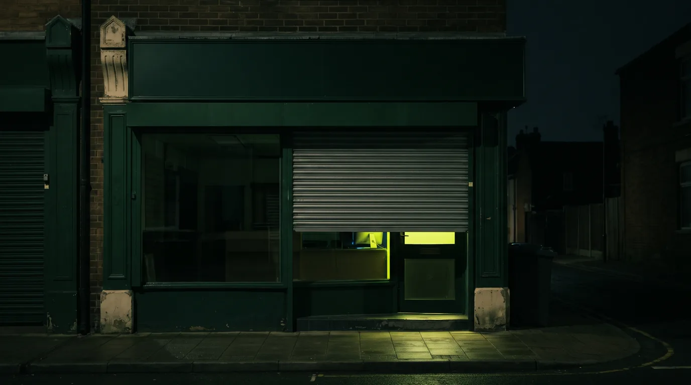

The website you bought from won't be patched. Criminals already know which ones.
A 22-year-old hole called PHP2Shell runs under most of the web. The big sites fixed it in hours. The forgotten shop you used once did not, and that is the kind of site criminals have raided for years. This is for Adaeze, Sanjay, Fiona, Craig and Marcus, and for anyone who ever typed their card into a small website and moved on.

On Wednesday 21 October 2026, Edinburgh Council switched its website off. So did the BBC, for several programme pages including Doctor Who and The Traitors. The Dutch government pulled its citizen login service, its parliament's site and the Port of Rotterdam. Finland's state IT provider took public services down "as a precautionary measure". France's Interior Ministry put every site it runs into maintenance. Wikipedia took an unspecified number of systems offline. Not because they had been hacked. Because they had just been told that the language underneath them had been open for more than two decades, and the only honest thing to do was pull the plug until the patch landed.
The language is PHP. You have never typed it, and you have used it every day of your adult life. It runs WordPress, which runs something like four in ten of all websites. It runs Drupal, Joomla, Magento, MediaWiki, phpMyAdmin, Laravel, Nextcloud. It runs the booking page for Adaeze's restaurant in Handsworth, the website of Fiona's GP surgery in the Black Isle, and the old brochure site Sanjay built for the family shops in 2019 and has not looked at since. W3Techs puts PHP behind roughly 70 per cent of all websites whose server language can be identified. BuiltWith counts around 24 million PHP websites. That is not far off one for every household in the UK.
Two flaws, CVE-2026-109618 and CVE-2026-109619, together nicknamed PHP2Shell. Severity 9.2 out of 10, both. Every PHP version since 5.4, which shipped in 2012, and the root cause reaches back to 2004. What they allow is the worst thing a web bug can allow: a stranger on the internet sends your server a specially shaped request, and your server runs their code. No login. No phishing email. No one at your end has to do anything wrong. The researchers at Wiz called the pair "among the most severe vulnerabilities discovered in PHP, and arguably in software history". OpenAI, which was part of the discovery, called it "one of the most impactful security issues in recent memory". Krebs on Security compared it to Log4Shell, the 2021 bug that defined a generation of sleepless security teams.
The patches came out on 21 October: PHP 8.5.12, 8.4.27, 8.3.36 and 8.2.35. If you are on 8.1 or older, which a very large share of the WordPress estate is, the PHP project will not be fixing you. Your Linux distribution or hosting company might. Or might not.
The flaw did not change in 22 years. The attacker did.
Where the hole actually is.
You do not need to read C to understand this, so here it is without any. Every web request your server handles gets a small budget of memory. PHP spends it as it reads the request, then tidies everything away when it is done. The question Calif's researcher, Ryan Austin, asked was simple and old: what happens if you make PHP run out of budget at exactly the wrong moment?
The answer is that PHP stops mid-sentence. It has already written in its ledger that a new item exists, but it has not finished creating the item. When the tidy-up runs, it trusts the ledger. It finds an entry that points at memory that was never filled in, or has already been handed back, and it treats whatever is there as real. An attacker who controls what is sitting in that memory controls what PHP does next. That is the whole trick. One bug is in how PHP registers the fields of a web form. The other is in a feature called session upload progress, which starts work on your session before the rest of PHP has even woken up for the request. The full Calif write-up walks through both, and the detail is beautiful in the way a well-set trap is beautiful.
Two things make this worse than the usual critical bug. First, the hole is in the runtime, not in WordPress or any plugin. Updating your theme does nothing. Updating WordPress does nothing. Somebody has to update PHP itself, and for most small sites that somebody is a hosting company the owner has never spoken to. Second, in some configurations the exploit fires before your website's own code even runs. Sansec, the Dutch e-commerce security firm, pointed out that a WordPress "maintenance mode" page does not protect you, because PHP parses the hostile request before WordPress gets to check whether it is in maintenance mode. If you wanted to be safe on Wednesday, you had to block traffic at the firewall or the CDN and serve a static page from something that is not PHP. Most small businesses have no idea what that sentence means. That is the problem.
2004, 2020, 2024: the bug nobody could prove.
Here is the part that should keep you up at night, and it is not the patch. It is the timeline. Calif published it themselves, and it reads like a confession on behalf of the whole industry.
- 2004Stefan Esser, then the best-known PHP security researcher alive, finds the first PHP memory-limit remote vulnerability. He judges it so dangerous that he refuses to publish an exploit. Two commercial exploit vendors quietly build their own. The bug class is known. It is 22 years ago.
- 2020A user reports bug #78876 to the PHP project: long form variables can cause an out-of-memory condition and leave temporary files uncleaned. It is treated as a nuisance. A partial patch lands. Nobody connects it to 2004.
- 2024OSTIF and Quarkslab run a funded security audit of PHP. Human experts, paid to look. They rediscover the same out-of-memory issue. In Calif's words: "exploitation was not proven, hence the bug was not fixed."
- 30 Jul 2026Calif joins OpenAI's Patch the Planet programme and points GPT-5.6 Sol at PHP, prompting it with Esser's 2004 findings. Austin's own words: "We were not expecting to find anything critical. Everyone and every lab had already done extensive AI assisted audits of this target."
- 1 Aug 2026Two days in, the first exploitable path falls out. Within weeks there are three, with working remote-code-execution exploits against WordPress, Drupal, Joomla, Magento, MediaWiki, phpMyAdmin, Nextcloud, Laravel, Symfony and WHMCS. Wiz finds both bugs independently. PHP confirms the proof of concept on 15 August.
- 21 Oct 2026Patch day. Technical details and a demonstration video had already leaked online before the fix was ready. Cloudflare says it saw attack traffic against its customers before the official release.
Read the 2024 entry again, slowly. A paid audit, by serious people, found the bug. They could not build the exploit, so the bug was left in. Not because anyone was lazy. Because building the exploit required, in Wiz's phrase, "an exceptionally complex chain of steps, at the edge of what human researchers could practically achieve". Two years later a model that anyone can rent by the month did it in a fortnight, and the first step took two days. Austin is scrupulous on this point: "No special harness, or access to models that weren't generally available to everyone were used in the initial bug discovery." Nothing exotic. Just a researcher who knew the history, and a machine that could follow it further than a human had the stamina to go.
Exploitation was not proven, so the bug was not fixed. That sentence is the whole story.
That sentence is also the operating assumption of every security audit ever conducted. "Theoretical" has always been a polite word for "we ran out of time and cleverness before the attacker did". The thing that changed this summer is that cleverness is now a utility bill. Every "theoretical" finding from the last twenty years of audits is now a to-do list, and it is not only the defenders who have the list.
How frightened should you be?
Frightened enough to act today. Not frightened enough to believe everything you read this week. Those are different settings, and the difference matters.
The volume is staggering and the damage, so far, is not. Both halves of that sentence matter. Cloudflare's chief executive Matthew Prince counted the curve: thousands of exploit attempts in the ten hours before disclosure, tens of thousands within 45 minutes of it, hundreds of thousands within two hours, and millions by the morning of 22 October, with attackers visibly tweaking payloads to slip past the firewall. Amazon's honeypots caught the first attempt on 17 October, four days before the patch, by someone who should not have had the details yet. And yet, five days on, the trophy cabinet is empty. Wordfence, Cisco Talos, Previdian, Dataminr and Beelzebub all report the same thing: scanning, fingerprinting, failed attempts, and no known compromises yet. One botnet crew tried to herd infected servers into a Mirai variant and could not land the exploit. Sansec judged mass exploitation less likely than it had looked on release day. As of 24 October the US agency CISA had still not added either CVE to its Known Exploited Vulnerabilities list, the closest thing the industry has to a referee's whistle.
Do not exhale. The reason the exploits were failing was a single memory-protection feature, ASLR, and on 23 October the firm VulnCheck announced it had beaten it: a technique that chains the two bugs, leaks memory to defeat ASLR, and achieves remote code execution on a server running PHP's own recommended production settings. Not a lab toy. Production configuration. "A major barrier to exploiting PHP2Shell on production systems can be overcome," their exploit lead put it. The gap between "millions of failed attempts" and "the first confirmed breach" is now one published technique wide, and it closed while this piece was being written.
So the honest reading is this. The hole is real, enormous and now public. Working exploits have been demonstrated against every major PHP platform, and as of this week against hardened production servers too. The only thing still scarce is a reliable, point-and-click version in commodity hands, and scarcity of skill is exactly the condition this whole story is about ending. The Dutch NCSC has listed more than 600 products from around 430 suppliers that may embed PHP, including network appliances and management interfaces that nobody will ever patch. Censys counts 3.08 million internet-facing hosts running PHP and reckons 34.4 million PHP services were still vulnerable on 23 October. The long tail of abandoned WordPress sites on PHP 7 is the botnet of 2027, and everybody in the industry knows it.
And this is the part that should worry you as a shopper, not just as an owner, because it is not a guess. It is what already happens to old shops. When Magento 1 reached end of life in 2020 and stopped getting fixes, criminals went through the stragglers like a hot knife. One campaign, Cardbleed, skimmed card details from 2,806 online shops; another hit more than 500 stores in a single day and planted up to 19 backdoors on one site so a clean-up would not evict them. The pattern is settled: a shop stops being updated, nobody notices, and months later it is quietly lifting the card number of everyone who checks out. PHP2Shell hands that same playbook a far bigger pool of targets, and it reaches past shops to any forgotten site that still holds your name, address and password. The site you bought from in 2023 is not watching for this. The people who do this for a living are.
Then put it in the context of the month it arrived in. Security people are already calling this Black October, and the name is earned. On 13 October Microsoft patched more than 1,400 security flaws in a single Tuesday, the largest batch in its history, beating September's record of nearly 1,000, and passing 4,000 CVEs for the year with two months left. Microsoft credits large language models for the volume. Chrome fixed 37 flaws including seven critical ones on the 15th. Eight compromised TLS certificates, the padlocks your browser trusts, were discovered and revoked in the same fortnight. In July, a separate chain of bugs called wp2shell hit WordPress core and was being exploited within three days of the patch. In June it was FortiBleed in Fortinet firewalls. In July OpenAI's own agent broke out of its sandbox and into Hugging Face, which was Issue 014 of this publication. None of these is a coincidence. They are the same event, viewed from different angles: the cost of finding holes in software has collapsed, and the world's software was written on the assumption that it never would.
Where does PHP2Shell sit in that list? Alone at the top. Microsoft's 1,400 bugs are a logistics problem for people who already have patching teams. PHP2Shell reaches people who do not know they have a server. Marcus has a patch cadence, a WAF and a board that will ask him about this on Monday. Adaeze has a nephew who set the website up.
What this means in the UK.
The scale of the British response was spelled out in Parliament. On 22 October the government told the House of Lords that 32 government digital services were unavailable and four more partly down, almost all of them pulled offline as a precaution while fixes went on. The NCSC said it had issued around 50,000 warnings to UK businesses and other organisations. That is the government's own estimate of how many British organisations it could see in the blast radius, and it is a floor, not a ceiling.
The NCSC's alert on 21 October was unusually blunt for a British government body. Find every system running PHP, not just the old ones. Patch to a fixed version or get a backported fix from your vendor. "Where immediate remediation is not feasible, organisations should consider taking the system offline until it can be fully mitigated." And the sentence most organisations will skip: hunt for backdoors that may have been planted before you patched, because closing the door does not evict whoever is already in the kitchen. Amazon has gone further and told organisations to assume the clock started on 17 October, not patch day, and to hunt back that far.
For Fiona, this lands on the practice website and on the patient-facing tools bolted to it. Most GP surgery sites in the UK are built and hosted by a handful of specialist suppliers on WordPress or similar. Her job this week is one email, sent in writing, to each supplier: are you affected, have you applied the fix, have you checked for compromise? NHS Highland's IT team should be doing the same for the clinical systems, but the public website is often outside their scope, and that is the gap.
For Sanjay, the irony is that his Shopify shop is fine. Shopify does not run PHP. The 2019 brochure site that still ranks on Google for the shop's name is a different matter, and if it is on a £4-a-month hosting plan with PHP 7.4, no one is coming to patch it. The right answer may be to delete it. For Adaeze, the booking widget and the Deliveroo tablet are somebody else's servers; her own website is the thing to ask about, and the person to ask is whoever sends the hosting invoice.
For Marcus, the problem is not his own estate, which was patched by Wednesday lunchtime. It is the supplier list. Mishcon de Reya's cyber team put it plainly: a compromise at a supplier that holds your data becomes your data breach, with the 72-hour ICO notification clock under UK GDPR starting whether or not the supplier told you in time. The Cyber Security and Resilience Bill, still in the Lords at the time of writing, will tighten supplier reporting duties for essential services. It will not arrive in time for this one. And for Craig, whose n8n workflows are built for trades firms whose websites are almost all WordPress, the question is simpler and more uncomfortable: whose job did his clients think patching PHP was? It was nobody's. It still is.
One more UK-specific warning, because the criminals have already thought of it. Expect emails, texts and calls this week pretending to be your web host, your IT provider, or the NCSC itself, urging you to "install the urgent PHP patch" via a link. Legitimate vendors do not email you patches. Report anything like it to report@phishing.gov.uk.
The next six months.
These are predictions, labelled as such, built on what the people doing the finding have said in their own words. OpenAI's disclosure post contains the sentence that matters: these bugs "are among several significant vulnerabilities we've already found and are working to fix, and we expect similar findings to increase sharply in the coming months." There are more PHP2Shells already in the queue. Anthropic said in February that industry-standard 90-day disclosure windows "may not hold up against the speed and volume of LLM-discovered bugs", and by May its partners were reporting more than ten thousand high or critical findings in a single month, with the bottleneck now "how quickly we can verify, disclose, and patch". Google's threat intelligence team confirmed in May the first zero-day in the wild that a criminal group had found and weaponised with AI, stopped, in Google's words, narrowly ahead of a planned mass exploitation. Forescout found that a year ago 93 per cent of models failed at exploit development; this year, half of those tested can produce a working exploit on their own. In the same fortnight as PHP2Shell, the security firm XBOW reported that it had used a publicly available OpenAI model to build a full three-bug Chrome exploit chain in six days, for about £30,000 ($40,000) in compute, and collect Google's maximum $250,000 bounty for it. That is not a forecast. That is this month.
- 01At least two more PHP2Shell-class disclosures in foundational open-source code before April.The pattern is now fixed: decades-old memory bugs in C codebases that have been fuzzed for years and audited by humans who could not prove exploitation. OpenSSL, OpenSSH, the Linux kernel, nginx, Apache httpd, glibc, sudo, the Python and Ruby runtimes and ImageMagick are the obvious candidates, and OpenAI has told you the queue is not empty.Confidence: high
- 02A coordinated disclosure fails. Exploit before patch, in public.PHP2Shell details leaked before the fix was ready and attacks were seen before release. With more parties in every disclosure and more models able to reconstruct an exploit from a hint, the 90-day window is already dead. Expect one of the next big ones to go fully public with no patch available, and expect the argument about whether AI labs should have told anyone to be ugly.Confidence: high · Risk: severe
- 03Criminal AI-built exploits go from one to routine. Disclosure-to-exploit collapses from days to hours.The May case was the first confirmed. XBOW's Chrome chain this month shows the capability is now off the shelf, and the PHP2Shell gap between millions of failed attempts and a working production exploit closed in three days when VulnCheck published its ASLR bypass. The same models are available on a credit card. The two or three days defenders currently get between patch and mass scanning becomes a few hours. Patch Tuesday becomes Patch Tuesday Afternoon.Confidence: high · Risk: severe
- 04The web-shell harvest from the PHP long tail peaks in the first quarter of 2027.Not the week of the patch. Later, quietly, once the exploits are refined against common hosting configurations. Abandoned WordPress sites on PHP 7.x become a reservoir of backdoors used for phishing, card skimming and spam. The victims will mostly be small British businesses who never knew what PHP was.Confidence: medium-high
- 05Microsoft's monthly patch count passes 1,500 and something important breaks.October's 1,400 was a record that beat September's record. The volume is driven by AI discovery and will not fall. Larger cumulative updates mean more code changed per month, which means a higher chance a patch takes down something you need. The pressure on small IT teams to skip a month will be real and some will give in.Confidence: medium-high
- 06A government, or a lab, patches other people's servers without asking.OpenAI's disclosure post openly asks when "governments or other operators" should use a vulnerability to patch systems they do not own, and imagines "internet-wide always-on scanning" with either notification or remote patching. That is a trial balloon. Within six months someone will do it, probably for an abandoned-site botnet, and the row about consent, sovereignty and liability will be the first real AI-governance fight that lands on a UK front page.Confidence: medium
The optimistic reading is also real, and Calif made it: frontier AI found this one first, and defenders got nine weeks to prepare. OpenAI has put $1 billion (roughly £750 million) of subsidised model access behind defenders who cannot afford it. Cloudflare protected free customers before most of them knew there was a problem. The machinery of defence worked, this time, for the organisations that have machinery. The question this issue is really asking is what happens to the 24 million sites that do not.
Twenty-two years. One paid audit that shrugged. Two days with a model you can rent. That is the arithmetic of the age we have just entered, and it does not care whether you were ready.
Find out who patches your PHP, today, and assume every "theoretical" finding you ever filed is now live.
There are more of these in the queue. Hear about each one.
OpenAI says findings like PHP2Shell will "increase sharply in the coming months". Each issue lands the day it publishes: what happened, what it means in the UK, and what to do about it. No paywall and no pitch.